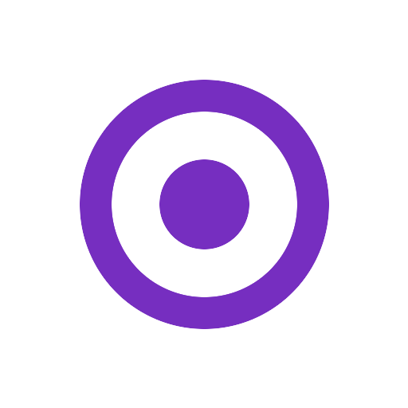

It looks fine, but nobody gets in touch.
People visit, scroll, and leave. The page never tells them what to do next, so they don't do anything.
Most businesses that get in touch with us already have a website. The trouble is it isn't doing much for them.
People visit, scroll, and leave. The page never tells them what to do next, so they don't do anything.
Most of your visitors are on mobile data. When a page takes five seconds to load, a lot of them leave before it finishes.
Your competitors come up when customers search for what you sell. You're on page three, or you don't show up at all.
The site was built for the company you were a few years ago. The business has grown since then and the site still looks the same.
We design the interface, build the site, and do the SEO that gets it found. Most often all three on the same project, so there's no handoff to lose things in.
There are four steps, and at each one you know what we're working on and what comes next.
A short call about your business, who you want to reach, and what the site has to do. We won't show you a pitch deck.
We send back what we'll build, a timeline, and a fixed quote, so you know the cost before any work starts.
You approve the designs before we write code, and you get a working preview before anything goes live.
We launch the site, then test its speed and SEO again once it's live. If you want us to keep looking after it, there's a yearly support plan.
Kaprera built a website that perfectly represents our organization and makes it easy for people to discover and engage with our initiatives, with a smooth, reliable structure that supports our growing community.

They built a complex, custom system for our pest control services with exceptional speed and efficiency. The owner uniquely combines high technical competence with strict professional ethics and privacy.
Working with Kaprera was a great experience. They understood exactly what I needed, communicated clearly throughout the project, and delivered beyond my expectations. I would definitely work with them again.
Kaprera did a fantastic job building the website. They understood what we needed right away and delivered a clean, fast, professional site on time. The team was easy to work with. Highly recommended!
This software is a game changer for our shop! It makes managing sales, orders, expenses, and inventory so easy and organized. It saves so much time and keeps everything under control. Highly recommended!
Tell us what you're building.
Book a callPricing depends on how many pages the site has, what it has to do, and what it has to connect to. After a short discovery call we send a fixed quote, and for a marketing site or a landing page we can usually give you the range before that call.
A focused landing page usually takes one to two weeks and a multi-page marketing site three to six. A custom web app or platform takes longer than that, and how much longer depends on what it has to do. We set the timeline before the work starts and tell you where things stand as we go.
Yes, as a yearly plan. A year of support includes at least 4 UX audits, 8 security audits and 6 performance audits. After each one we fix what we find and send you a written note of what changed. Uptime monitoring runs continuously in between. Dependency updates, SSL renewals and hosting config are covered as well. We quote the plan after looking at the site, the same way we quote a build.
Yes. We are based in Beirut and work remotely with clients across the GCC and the wider region. We have delivered projects for teams in Saudi Arabia, running the whole thing over calls, email and shared files.
We read every message and reply within one business day, Beirut time. If it's urgent, WhatsApp us and we'll pick it up faster.